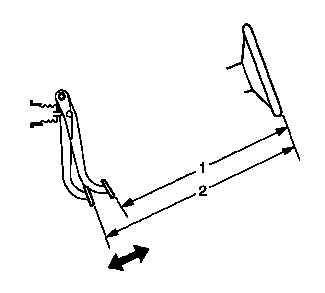

制动踏板行程的测量和检查
- 1.点火开关置于OFF（关闭）位置且制动器处于冷态时，踩下制动踏板3-5次，或直到制动踏板变的坚实，以耗尽真空制动助力器储备的能量。
- 2.将CH-28662量规安装至制动踏板。
-

3.测量并记录制动踏板至方向盘轮缘的距离 (1)；记录测量点。
- 4.如CH-28662量规所示，在制动踏板上施加445牛（100磅力）的作用力并保持。
- 5.在制动踏板上保持445牛（100磅力）的作用力的同时，测量并记录从制动踏板上相同点到方向盘轮缘上相同点之间的距离 (2)。
- 6.松开制动器，并重复步骤3和4，以获得第2个测量值。在获得第2个测量值后，转至步骤7。
- 7.将两次施加制动器时记录的2个测量值进行平均。
- 8.从施加制动时的平均测量值 (2) 中减去未施加制动时的初始测量值 (1)，以获得制动踏板的行程距离。